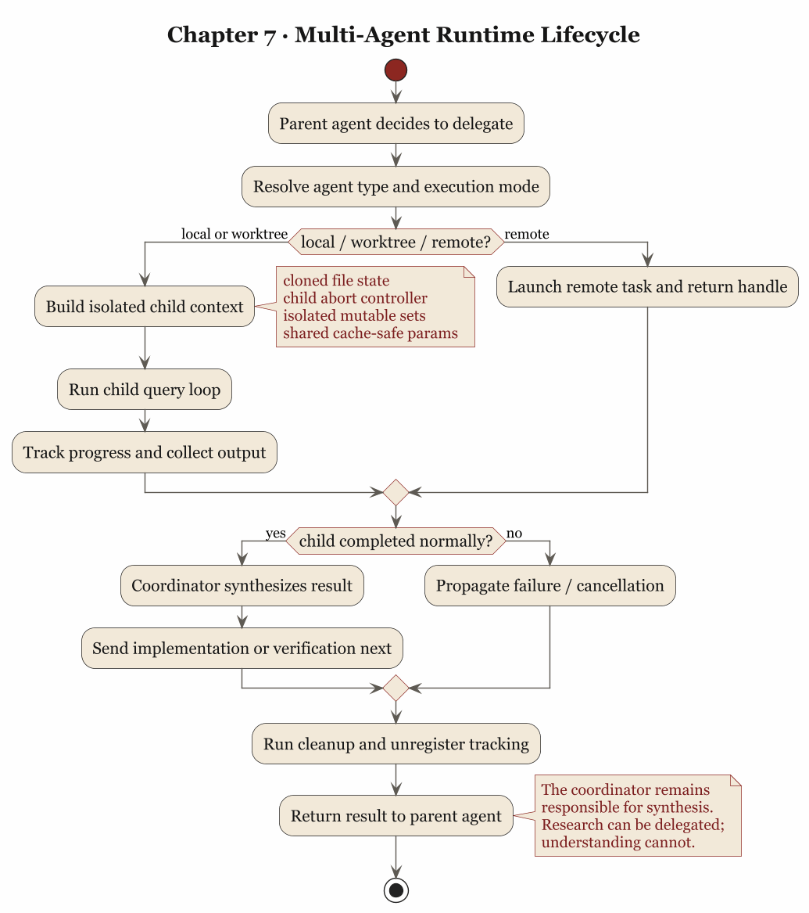

第 7 章 多代理与验证：用分工和验证管理不稳定性
7.1 单代理走到一定程度，问题就不再是“会不会做”，而是“怎么分工”
一个代理如果只在单线程里回答问题，很多矛盾都还能靠耐心遮过去。它慢一点，用户多等会儿；它想得乱一点，多追问几轮；它偶尔把上下文拖成一团，也还可以靠 compact 补救。可一旦任务变大，单代理模型就会碰到一个更难缠的问题：研究、实现、验证都挤在同一条上下文链上，彼此抢预算、抢注意力、抢叙事中心。
这时候，多代理看上去像一种自然答案。再开几个 worker，不就行了？但事情没这么便宜。多代理并不天然带来秩序，很多时候它只会把单代理的混乱并行复制几份。真正困难的是隔离这些 agent 的不稳定性，同时把结果组织回来。
Claude Code 的源码在这点上很清醒。它没有把 subagent 当成“另一个会说话的窗口”，而是把它当成一段需要明确缓存边界、状态边界、验证职责和清理责任的受管执行流程。
7.2 forked agent 的第一原则是 cache-safe
src/utils/forkedAgent.ts 开头有一段注释，非常能说明 Claude Code 对 subagent 的真实理解。它说 forked agent utility 的职责包括：
- 与父代理共享 cache-critical params，确保 prompt cache hit
- 跟踪整个 query loop 的 usage
- 记录指标
- 隔离可变状态，防止干扰主循环
这四条里，最先出现的是“共享 cache-critical params”。这并非偶然。它说明在 Claude Code 眼里，fork 是运行时层面的受控分叉。既然是分叉，就必须非常在意哪些参数必须和父请求保持一致，否则 prompt cache 共享就失效，成本和延迟会立刻变坏。
CacheSafeParams 里明明白白列了这些要素：
systemPromptuserContextsystemContexttoolUseContextforkContextMessages
还专门提醒：别随便改 maxOutputTokens，因为 thinking config 也会受影响，而 thinking config 又是 cache key 的一部分。
这段设计说明，多代理首先是运行时经济学问题。一个子代理如果每次都把父上下文重新烧一遍 token，看上去像在并行提效，实际只是把浪费并行化。Claude Code 在这个环节先处理的是：怎么 fork 才不把缓存打烂。
7.3 状态隔离说明，子代理首先要减少污染
forked agent 的第二个关键，在 createSubagentContext()。源码里对它的默认行为写得很直白：默认情况下，所有 mutable state 都隔离，避免干扰 parent。
它默认会做这些事：
readFileState先 cloneabortController生成 child controller，而不是直接共享getAppState做包装，让子代理避免 permission promptsetAppState默认 no-opnestedMemoryAttachmentTriggers、loadedNestedMemoryPaths等集合都重新建
只有在明确 opt-in 的情况下，才会共享某些 callback，例如 shareSetAppState、shareSetResponseLength、shareAbortController。
这套设计特别重要，因为它揭示了一个很多人做多代理时都会忽略的事实：子代理最宝贵的地方，在于它可以避免把自己的局部混乱污染主线程。研究中的误判、临时读到的文件状态、一次性的推理枝杈、正在进行的工具决策，如果全都直接写回主上下文，你得到的只会是更快的脏化。
Claude Code 在这里的态度是：共享要靠明确同意，隔离才是默认伦理。这种伦理很像数据库事务设计，不像聊天玩具。它不假定“大家都是自己人，状态可以随便串”，而是假定“只要是可变状态，就必须先隔离，再决定共享哪些部分”。
7.4 协调者模式说明，synthesis 才是稀缺能力
如果只看 src/coordinator/coordinatorMode.ts，你会发现 Claude Code 对 coordinator 的要求很有分寸。它明确说 coordinator 的工作包括：
- 帮用户达成目标
- 指挥 worker 做 research、implementation、verification
- 综合结果并和用户沟通
- 能直接回答的问题就直接回答，不要滥委派
最关键的一句，在第 5 节 prompt 里：Always synthesize。当 worker 回报研究结果后，协调者必须先读懂，再写出具体 prompt；不要说“based on your findings”，不要把理解继续外包给 worker。
这句话几乎就是多代理系统的命门。因为真正稀缺的是有人把 worker 带回来的局部知识重新压成清晰、可执行、可验证的下一步。缺少这一层，多代理很快就会退化成一种带着礼貌措辞的任务转发机。每个 agent 都在忙，系统整体却并没有更懂。
Claude Code 至少在 prompt 设计上很明白这个道理。它要求 research 和 synthesis 分开，要求协调者对研究结果负责，要求 follow-up prompt 里出现具体文件、具体位置、具体变更，而不是抽象地“根据前面的结论”。这是非常正统的工程分工：研究可以分布式，但理解必须重新收束。
7.5 验证必须独立成阶段，否则“实现完成”很快就会冒充“问题解决”
coordinatorMode.ts 还有一段特别值得抄下来。它把常见任务分成：
- Research
- Synthesis
- Implementation
- Verification
并且专门强调：verification 的目标是证明代码有效，而不只是确认代码存在。源码里甚至写得近乎不留情面：
- run tests with the feature enabled
- investigate errors, don't dismiss as unrelated
- be skeptical
- test independently, don't rubber-stamp
这段话说明 Claude Code 没把验证当成实现 worker 顺手带一下的附属环节，而是当成第二层质量关。你甚至能在 prompt 里看到“implementation worker 自证一遍，verification worker 再作为第二层 QA”这种明确分层。
为什么这点这么重要？因为在代理系统里，“我改了代码”和“代码因此正确”之间，隔着一条很宽的河。模型尤其擅长在这条河上搭纸桥。它会给你改动、解释、甚至给你一段像样的测试输出，但这些都不等于功能真的在系统里站住了。
所以，把 verification 单列出来，是为了防止“会改代码”冒充“能交付结果”。Harness Engineering 在多代理阶段真正需要的，正是这种角色分化。实现的人要尽量专注于改；验证的人要专门怀疑这些改动配不配活着。
7.6 hooks 和任务生命周期说明，子代理不是扔出去就算了
多代理系统还有一个很容易被忽略的地方：spawn 只是开头，收尾同样重要。
src/utils/hooks/hooksConfigManager.ts 里定义了 SubagentStart 和 SubagentStop 两类 hook。前者在 subagent 启动时触发，输入里有 agent_id 和 agent_type；后者在 subagent 即将结束时触发，输入里还带 agent_transcript_path，并允许 exit code 2 把 stderr 反馈给 subagent，继续让它跑。
这说明子代理在 Claude Code 里是显式暴露生命周期节点的系统对象。启动时可以观测，停止前可以介入，转录路径可追踪。这里的重点在于，“子代理结束”也是需要被管理的事件。
与此同时，src/tasks/LocalAgentTask/LocalAgentTask.tsx 的 registerAsyncAgent() 又展示了另一个层面：每个 async agent 都会注册 cleanup handler，父 abort 可以自动传播给子 abort controller，任务结束后要 evict output、更新状态、解除 cleanup 注册。
这套机制非常像操作系统，不像聊天面板。它关心的核心问题是：
- 这个 agent 是否仍在运行
- 父任务死了它是否该跟着死
- 它的输出文件是否还要保留
- 它的 cleanup callback 有没有泄漏

很多多代理 demo 都只做到“我能再起一个 agent”，Claude Code 至少多做了一步：它把 agent 当作会泄漏资源、会残留状态、会在父进程结束后变成孤儿的运行实体来看待。这才像是在把代理当系统组件处理。
7.7 验证不仅针对代码，也针对记忆和建议
多代理与验证并不只发生在 code change 之后。Claude Code 在 memory 体系里也埋了一条很值得注意的原则。
src/memdir/memoryTypes.ts 里专门提醒：memory records can become stale；在基于 memory 给用户建议之前，要先 verify current state；如果记忆与现状冲突，要相信眼下读到的真实状态，并更新或删除 stale memory。
这句话放在多代理章节里，恰好能说明一个更一般的事实：验证是整个系统用来抵抗时间漂移和上下文漂移的基本习惯。一个系统如果只验证新写下去的代码，却不验证旧记忆、旧假设、旧索引，那它仍然会被历史信息带偏。
从这个角度看，verify 既是一项 skill，也是一种组织纪律。你可以把工作分出去，可以把信息存起来，可以让其他 agent 先跑在前面，但在用户准备据此行动之前，总要有人回到当前现实，重新确认这些东西还是真的。
7.8 多代理真正解决的是不确定性的分区
把这些源码拼起来看，会发现 Claude Code 的多代理设计其实围绕一个朴素目标展开：给不确定性分区。
研究 worker 可以在局部上下文里探索，不必把所有试探都写回主线程；实现 worker 可以专注修改，不必同时扛着全局沟通负担；验证 worker 可以专门怀疑，不必替自己的实现辩护；coordinator 则留在中间做收束、综合和用户界面。
这套分区带来的最大好处是职责清晰。职责一清晰，错误就更容易定位：是 research 没找到点子，还是 synthesis 没吃透研究，还是 implementation 写错了，还是 verification 放水了。反过来，如果所有事情都交给一个代理顺手完成，你最后得到的只是一锅浓汤。味道也许不错，出了问题却没法分层修。
所以，多代理真正有价值的地方，在于把不同种类的不确定性关进不同容器里，再用 coordinator 把它们组织回来。这种做法比单纯追求并发更稳，也更符合工程要求。
7.9 从源码里可以提炼出的第七个原则
这一章最后可以压成一句话：
多代理依赖清晰分工：研究、实现、验证和综合各自处在不同约束容器里，最后由协调者把结果重新缝合成可交付结果。
Claude Code 的源码在几个地方共同支持这个判断：
forkedAgent.ts把 cache-safe 参数、usage tracking 与状态隔离放在第一位，说明 fork 首先是运行时控制问题createSubagentContext()默认隔离 mutable state，只允许显式 opt-in 共享，说明多代理先防污染再谈协作coordinatorMode.ts强调 coordinator 必须 synthesize，而不是转发研究结果，说明综合理解不能外包- 同一个文件把 verification 独立成阶段，并要求独立证明变更有效，说明实现与验证必须角色分离
hooksConfigManager.ts提供SubagentStart/SubagentStop生命周期 hook，说明子代理是可观测对象，不是黑箱线程LocalAgentTask.tsx处理 parent abort、cleanup、output eviction，说明 agent 生命周期需要回收机制
如果把这些提炼成可迁移的工程原则，大概是这样：
- fork 时先考虑 cache 和状态边界，再考虑“人格分工”
- 子代理默认应隔离，可共享必须显式声明
- 研究可以委派，综合理解不能委派
- 验证必须与实现解耦，否则系统会奖励自证正确
- agent 生命周期必须可观测、可中止、可清理
- 真正的并行价值在于职责更清楚
下一章要讨论的，是当这一整套机制落到团队里时，如何从个人技巧变成组织制度。也就是说，CLAUDE.md、skills、approval、hook、memory 这些东西，怎样从“某个高手自己会用”变成“一个团队可以稳定复用”的工程实践。